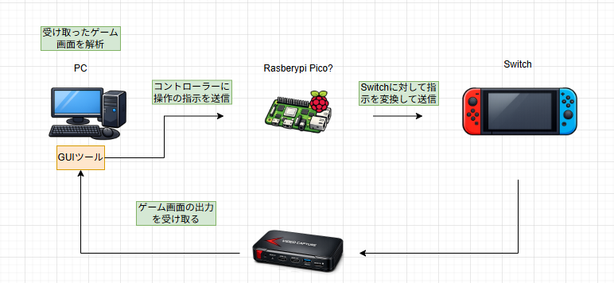

AutoPlayCraft 要件定義書
本書は、Nintendo Switch 向けゲーム「ポケットモンスター」を対象とした
自動操作システム「AutoPlayCraft」の要件定義書である。
1. 背景
1.1 背景
自動ゲーム操作の需要が高まり、繰り返し入力や複雑な操作を正確に実行する手段が求められている。
特にゲームの自動化では、同じ動作の繰り返しや状況判断が重要となる。
AIを活用した画像認識と制御により、従来の手動操作では難しかった作業の自動化が可能となる。
1.2 対象機器
Nintendo Switch
1.3 目的
ゲームの自動操作を実現するため、AIによる視覚認識と入力制御を組み合わせたシステムを構築する。
GUIアプリから制御内容を管理し、AIが認識した状況に応じて自動的に入力を行う。
2. システム概要
2.1 システムの概要
AutoPlayCraftは、自動ゲーム操作を実現するためのシステムです。
2.2 主要構成
GUIアプリ: PC上で動作する操作・管理用インターフェース
コントローラー側: ゲーム操作を実行するデバイス
AI推論エンジン: 画像認識と判断を行うモジュール
通信インターフェース: UART / USB HID Vendor
Nintendo Switch: 対象ゲーム機
2.3 処理フロー
GUIアプリがPC上で動作する
PCがAIへゲーム画面情報を送信する
PCがAIの判定結果をもとに制御信号を生成する
コントローラー側がSwitchへ入力を送信する

2.4 通信仕様
UART: 115200bps
USB HID Vendor: 1ms間隔
3. 機能要件
3.1 画像認識機能
AIが判定する項目：
現在のゲーム状態（戦闘、ボックス、メニューなど）
卵アイコン（小・大）
ポケモンの種類判定
アイテム判定
プレイヤーの向き
ミニマップ位置
地図情報
3.2 操作制御機能
SwitchReport を生成し、UART または USB HID Vendor で送信
1ms周期の HID ポーリングに追従可能な速度で送信
3.3 GUI機能
自動化シナリオの選択
AI判定結果の表示
コントローラー接続状態の表示
4. 非機能要件
4.1 通信性能（UART）
115200bps（約11.5KB/s）
1バイト送信：約 87?s
SwitchReport（8バイト）：約 700?s
HIDポーリング：1ms周期 → UARTでも十分対応可能
4.2 AIモデル
使用予定のAI技術：
YOLO（UI検出・ミニマップ検出）
MobileNet（ポケモン種類判定）
OCR（技名・アイテム名）
OpenCV（ミニマップ位置特定）
ONNX Runtime（高速化）
※AIに提案された構成のため、検証しながら採用可否を判断する。
4.3 画面解析性能
キャプチャデバイスの遅延を考慮し、推論速度は 30?60fps を目標とする。
5. 開発環境
5.1 GUIアプリ
言語：C# または Python
IDE：Visual Studio / PyCharm / VS Code
5.2 コントローラー側
言語：C
IDE：VS Code
5.3 AI
言語：Python
ライブラリ：OpenCV, YOLO, MobileNet, ONNX Runtime
5.4 管理
Git hub
ドキュメント作成
Sphinx
6. 制約条件
Switch の HID ポーリング周期は 1ms → これを満たす必要がある
キャプチャデバイスの遅延に依存するため、処理速度の最適化が必須
AIモデルの推論速度が自動化の成功率に直結する
コントローラー側の処理はリアルタイム性が求められる
7. 今後の課題
画像認識精度の向上
推論速度の高速化
GUIアプリの操作性改善
自動化シナリオの拡張（孵化、厳選、アイテム収集など）
学習データの収集とモデル改善
用語集
SwitchReport
Nintendo Switch に送信する入力レポート形式。
UART
PC → コントローラー間のシリアル通信方式。
USB HID Vendor
Switch に入力を送るための USB ベンダー固有 HID。
YOLO
物体検出モデル。UIやミニマップ検出に使用。
MobileNet
軽量画像分類モデル。ポケモン種類判定に使用。
OCR
文字認識。技名・アイテム名の判定に使用。